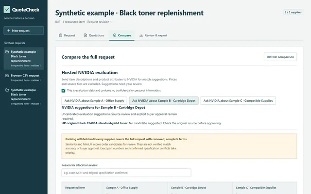

Experiments you can explore
A little less theory.
A little more try it.
A closer look at data, models, and the decisions around them. Three small, interactive explanations alongside the real project work.
01 / From input to decision
A model is one part
of the system.
Good results need useful data, a representation, an honest evaluation, and a person who can question the output. Select a step to see why.
Know where each document or example came from.
Make the information useful for the task.
Keep an untouched comparison and record limitations.
A suggestion should be inspectable before it becomes a decision.
Scroll to follow the story, or choose a step.
Trace it back.
QuoteCheck keeps prices connected to their original supplier documents. IntentDesk distinguishes fictional pilot tickets from its public benchmark. Knowing the source is part of understanding the result.
Turn context into signals.
IntentDesk uses frozen MPNet embeddings and a trained classifier. QuoteCheck ranks candidates with a fine-tuned MiniLM model. A useful representation depends on the question being asked.
Compare. Then question.
Accuracy on known categories is only one check. IntentDesk's unsupported-input rule failed and remains disabled. La Liga's richer workflow did not beat its baseline. Those outcomes belong in the story too.
A suggestion, with a way back.
Both IntentDesk and QuoteCheck retain human review. A score does not approve a match, change a price, or establish a correct answer. Source links, uncertainty, and decision history make review possible.
A quiet visual interlude
Connections, made visible.
An illustrative network of points. On supported desktops it moves gently; on mobile you choose when to activate it.
02 / A different way to look at text
Similar words.
Nearby points.
Explore twelve fictional requests arranged into three topics. Select a sentence, or activate the 3D view and select a point.
Selected request
I cannot sign into my account.
Account access
Illustrative data: the sentences are fictional and the coordinates are hand-designed to explain vector proximity. These are not trained embeddings, IntentDesk model outputs, confidence scores, or evaluation results. A real projection can also distort distances.
03 / Something you can turn around
The interface,
from another angle.
A simple 3D device built around a genuine QuoteCheck screenshot. The screen shows synthetic supplier offers, as in the project case study.

Built to keep the
source in sight.
QuoteCheck brings extraction, candidate matching, and source-linked review together. Its model ranks options for a person to check.
The 3D device is a portfolio illustration. The application screenshot is genuine; its quotation data is synthetic.
Read the case study ↗